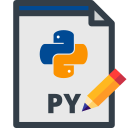
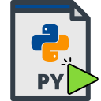

Getting Started
This plugin allows to run scripts in the 2 _CloudCompares_ ‘modes’: GUI & CommandLine.
GUI
In GUI, there are 3 actions:
- The REPL (Read Print Eval Loop) which allows for quick testing of some actions.
- The editor which allows to create,edit,save python script and most importantly run them.
- 
The file runner, which shows a small dialog where you can select a file and run it without having to have the editor opened.

Scripts
The typical python script will need to import Python modules that provide access to functions and data-structures of cloudcompare:
# cccorelib contains definitions of tools, such as Cloud2Cloud distance,
# sampling algorithm, etc
import cccorelib
# pycc contains definitions of data structures and other things,
# the most important being getting the current running CC instance
# to retreive point cloud/meshes
import pycc
# The CC object is the interface that will allow you to navigate
# the tree of files currently loaded, the list of files selected, etc
CC = pycc.GetInstance()
CC will be an object of type pycc.ccPythonInstance.
Plugin
It is also possible to create scripts or module that register actions that will then be launch-able from the Ui, a bit like regular C++ plugins do.
In the plugin settings, you can indicate a path where custom python plugin are
stored. When starting up, the indicated folder will be scanned and all python modules
(.py files or folders) will be imported, which will allow them to register their actions
using the pycc.RegisterAction() function.
You can create a class plugin by creating a class that implements
the pycc.PythonPluginInterface.
See this
for an example.
Command Line
Similarly a commandline script will start with the following lines:
import cccorelib
import pycc
CC = pycc.GetCmdLineInstance()
CC will be an object of type pycc.ccCommandLineInterface.
To run in command line mode pass following option: -PYTHON_SCRIPT
cloudcompare -PYTHON_SCRIPT my_script.py
The plugin will take all arguments that follows the script name and populate python’s sys.argv with them:
Example:
/path/to/cloudcompare -PYTHON_SCRIPT my_script.py some_positional_arg --size 50
Python’s sys.argv will be equal to: [‘/path/to/cloudcompare’, ‘some_positional_arg’, ‘–size’, ‘50’]